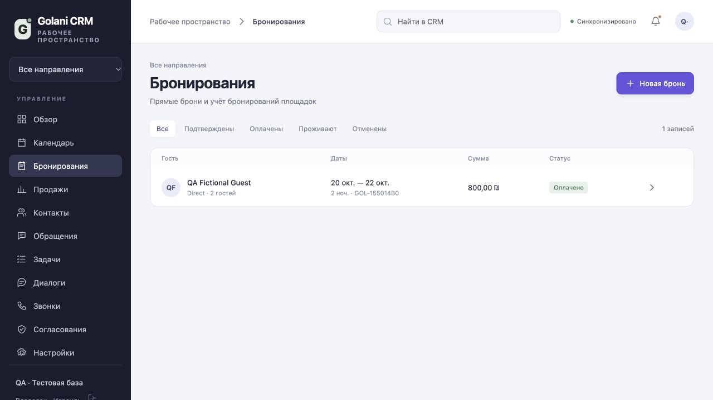

תסריטי שירות
קטלוג והנחיות מאושרים, בחירת שפה וגבולות הרשאה ברורים.
Galany CRM · לעסקים בישראל
עוזר קולי והיסטוריית לקוח באותה מערכת CRM. לקבלת פניות, למענה מאושר ולהעברת שאלות מורכבות לאדם.
Light · 2,000 ₪ / חודש · לפני מע״מ · שיחות בנפרד

מערכת ה-CRM בענן כבר נמצאת בשימוש: לקוחות, עסקאות, משימות, הזמנות ודוא״ל בסביבת עבודה אחת. עוזר AI טקסטואלי ומודול קולי משולבים ב-CRM. הטלפוניה ללקוחות נמצאת בשלב פיילוט ודורשת חיבור ובדיקת קבלה לפני הפעלה.
תוכנת מוקד
קטלוג והנחיות מאושרים, בחירת שפה וגבולות הרשאה ברורים.
השיחה ופעולות ההמשך מקושרות לסביבת ה-CRM. קטעים לא ברורים אינם מוחלפים בעובדות מומצאות.
סיכום ותמלול מלא בדוא״ל בערוץ מחובר. שליחה ב-WhatsApp דורשת חיבור נתמך נפרד.
בודקים קו, הרשאות, ניתוב, מדיניות הקלטה והעברה לנציג לפני קבלת שיחות לקוחות.
ה-CRM הוא הבסיס. נציג המכירות והמוקד הקולי הם מודולים מובנים שאפשר להטמיע בהדרגה. העמודים הנפרדים מסייעים לבחור תהליך, ולא מחייבים רכישת שלוש מערכות.
הלקוחות, הסיכומים והצעד הבא במקום אחד. CRM פעיל בענן עם נציג מכירות AI ומודול מוקד קולי מובנים.
לפרטיםמנהל מכירות מבוסס AI מתקדם. מסייע להבין את הלקוח, להסביר את ההצעה ולשמור על המשך טיפול ברור.
לפרטיםעוזר קולי והיסטוריית לקוח באותה מערכת CRM. לקבלת פניות, למענה מאושר ולהעברת שאלות מורכבות לאדם.
לפרטיםמגדירים את שפת השירות, מונחי העסק, הקטלוג ותסריטי השיחה. בודקים עברית, רוסית ואנגלית על דוגמאות שלכם.
מסלולים ב-ILS, זמני שיחה והיקף הטמעה מוגדרים מראש. כל המחירים אינם כוללים מע״מ.
גישה מדפדפן בטלפון ובמחשב לאחר הקצאת הרשאה. אין מדובר באפליקציה שפורסמה ב-App Store.
אזור הזמן בישראל, שעות פעילות וכללי שבת וחגים נקבעים עם הבעלים. יומנים חיצוניים מחוברים בנפרד.
CRM · נציג מכירות AI · נוכחות דיגיטלית
בוחרים את המסלול המתאים לעסק. Light כלול ב-Booking, Business ו-Business Plus. המזכירה שלי היא תוכנית נפרדת ללא חבילת Light. היקף ההטמעה והאינטגרציות הזמינות מסוכמים לפני תחילת העבודה. המזכיר האישי למוסך הוא מסלול נפרד לפניות ותיאום טיפולים, עם 100 דקות כלולות. המזכיר האישי לרופא השיניים הוא מסלול נפרד עם שירותים משלו ו-100 דקות כלולות.
מחירי המסלולים הקיימים אינם כוללים מע״מ. מע״מ במסלול המזכירה שלי טעון אישור.
1,000 ₪
לחודש · 100 דקות שיחות נכנסות כלולות
מעבר ל-100 דקות: 18 ₪ לשעת שיחה בפועל, כלומר 0.30 ₪ לדקה. המחיר לפני מע״מ; מע״מ יתווסף ככל שחל.
1,000 ₪
לחודש · 100 דקות שיחות נכנסות כלולות
מעבר ל-100 דקות: 18 ₪ לשעת שיחה בפועל, כלומר 0.30 ₪ לדקה. המחיר לפני מע״מ; מע״מ יתווסף ככל שחל.
1,000 ₪
לחודש · 100 דקות שיחות נכנסות
מע״מ, מחיר מעבר ל-100 דקות ותנאי ההקמה יובהרו לפני ההפעלה.
2,000 ₪
לחודש
בתוספת 18 ₪ לשעת שיחה בפועל (30 אגורות לדקה).
3,000 ₪
לחודש
בתוספת 18 ₪ לשעת שיחה בפועל (30 אגורות לדקה).
12,960 ₪
ל-30 יום · קו אחד 24/7
13,392 ₪ ל-31 יום. 18 ₪ × 24 שעות × מספר הימים בחודש.
12,960 ₪
ל-30 יום · הקו הראשון 24/7
13,392 ₪ ל-31 יום. קווים נוספים: 18 ₪ לשעת שיחה בפועל.
מחירי המסלולים הקיימים אינם כוללים מע״מ. מע״מ במסלול המזכירה שלי טעון אישור.
חישוב לפי המחירון, לא חשבון לתשלום. הטמעה ושירותי צד שלישי לפי הצעה מוסכמת.
ממפים תהליך אמיתי בעסק, בלי להעביר מידע רגיש בטופס ציבורי.
מגדירים ערוצים, אינטגרציות, הרשאות AI, תנאי קבלה ועלות מלאה.
מחברים מידע מאושר ובודקים שפה, העברה לנציג והערוצים המחוברים.
ההפעלה מתואמת לאחר בדיקה. תנאי המנוי, התמיכה והסיום נקבעים בהסכם.
טלפוניה, WhatsApp, Google Calendar, Booking.com ו-Airbnb אינם מחוברים באופן אוטומטי. הזמינות תלויה ב-API, בהרשאות ובבדיקה מוצלחת. שליחת דוחות בדוא״ל נבדקה בתצורת הבעלים הנוכחית; לעסק שלכם נדרשת הגדרה נפרדת. AI עלול לטעות ויש לאמת מידע והחלטות חשובות. אין הבטחה לאינטליגנציית-על עצמאית, למכירות מובטחות או להחלפת כל העובדים.
אפשר להטמיע אותו כתחום נפרד, אך הוא מודול של Galany CRM ומשתמש בנתונים ובהרשאות שלה.
לא. הטלפוניה ללקוחות נמצאת בפיילוט. תחילה מסכמים ספק, מספר וניתוב ומשלימים בדיקת קבלה מוצלחת.
Light ו-Booking: 18 ₪ לשעת שיחה בפועל, כלומר 30 אגורות לדקה. Business: קו ראשון 24/7 לחודש מלא כולל זמן ללא שיחה, 12,960 ₪ ל-30 יום. המחירים אינם כוללים מע״מ.
בוחרים שפה ובודקים אותה עם מונחי העסק בפיילוט. אין הבטחת איכות אחידה לכל שפה, מבטא או שיחה רועשת ללא בדיקה.
Galany CRM
בחרו תחום ותארו היכן פניות הולכות לאיבוד. נכין הדגמה והצעת מנוי מתאימה.
+972 55 507 14009881988@gmail.comגוש עציון 1, טבריה, ישראל